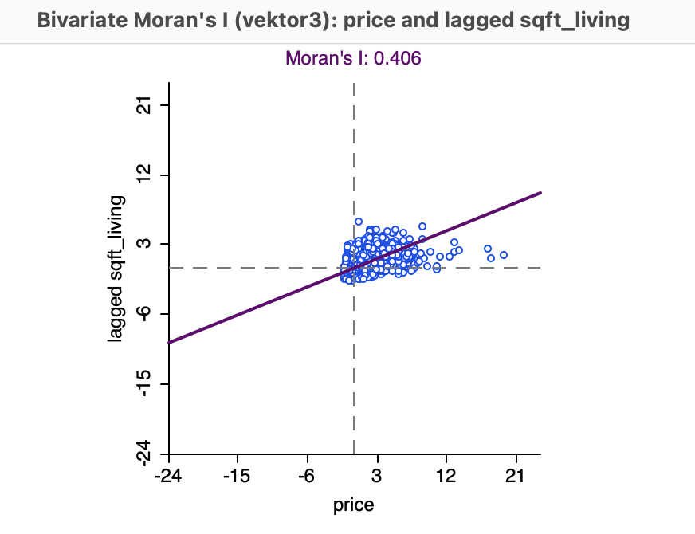
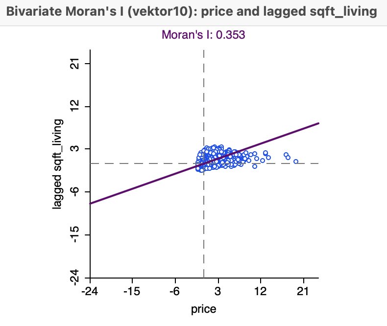

id date year
Length:21436 Min. :2014-05-02 00:00:00.00 Min. :2014
Class :character 1st Qu.:2014-07-22 00:00:00.00 1st Qu.:2014
Mode :character Median :2014-10-17 00:00:00.00 Median :2014
Mean :2014-10-29 17:30:02.34 Mean :2014
3rd Qu.:2015-02-18 00:00:00.00 3rd Qu.:2015
Max. :2015-05-27 00:00:00.00 Max. :2015
month day geometry zipcode
Min. : 1.000 Min. : 1.00 POINT :21436 Min. :98001
1st Qu.: 4.000 1st Qu.: 8.00 epsg:2926 : 0 1st Qu.:98033
Median : 6.000 Median :16.00 +proj=lcc ...: 0 Median :98065
Mean : 6.564 Mean :15.69 Mean :98078
3rd Qu.: 9.000 3rd Qu.:23.00 3rd Qu.:98117
Max. :12.000 Max. :31.00 Max. :98199
price dist_cbd.V1 floors bedrooms
Min. : 75000 Min. : 0.98600 Min. :1.000 Min. : 0.000
1st Qu.: 324866 1st Qu.: 9.78459 1st Qu.:1.000 1st Qu.: 3.000
Median : 450000 Median :16.54715 Median :1.500 Median : 3.000
Mean : 541650 Mean :18.48321 Mean :1.496 Mean : 3.372
3rd Qu.: 645000 3rd Qu.:25.32035 3rd Qu.:2.000 3rd Qu.: 4.000
Max. :7700000 Max. :77.31409 Max. :3.500 Max. :33.000
bathrooms sqft_living sqft_living15 sqft_lot
Min. :0.000 Min. : 290 Min. : 399 Min. : 520
1st Qu.:1.750 1st Qu.: 1430 1st Qu.:1490 1st Qu.: 5040
Median :2.250 Median : 1920 Median :1840 Median : 7614
Mean :2.117 Mean : 2083 Mean :1988 Mean : 15136
3rd Qu.:2.500 3rd Qu.: 2550 3rd Qu.:2370 3rd Qu.: 10696
Max. :8.000 Max. :13540 Max. :6210 Max. :1651359
sqft_lot15 sqft_above sqft_basement yr_built
Min. : 651 Min. : 290 Min. : 0.0 Min. :1900
1st Qu.: 5100 1st Qu.:1200 1st Qu.: 0.0 1st Qu.:1952
Median : 7620 Median :1560 Median : 0.0 Median :1975
Mean : 12786 Mean :1791 Mean : 291.7 Mean :1971
3rd Qu.: 10087 3rd Qu.:2220 3rd Qu.: 560.0 3rd Qu.:1997
Max. :871200 Max. :9410 Max. :4820.0 Max. :2015
yr_renovated condition grade view
Min. : 0.00 Min. :1.00 Min. : 1.000 Min. :0.0000
1st Qu.: 0.00 1st Qu.:3.00 1st Qu.: 7.000 1st Qu.:0.0000
Median : 0.00 Median :3.00 Median : 7.000 Median :0.0000
Mean : 84.73 Mean :3.41 Mean : 7.662 Mean :0.2351
3rd Qu.: 0.00 3rd Qu.:4.00 3rd Qu.: 8.000 3rd Qu.:0.0000
Max. :2015.00 Max. :5.00 Max. :13.000 Max. :4.0000
waterfront GEOIDTRT FEATURE_ID TRACT_LBL
Min. :0.000000 Length:21436 Min. :10153 Length:21436
1st Qu.:0.000000 Class :character 1st Qu.:34396 Class :character
Median :0.000000 Mode :character Median :44673 Mode :character
Mean :0.007604 Mean :38114
3rd Qu.:0.000000 3rd Qu.:45279
Max. :1.000000 Max. :45837
NA's :1
TRACT_STR TRACT_INT TRACT_FLT TRACT_DEL
Length:21436 Min. : 100 Min. : 1.0 Length:21436
Class :character 1st Qu.:10402 1st Qu.:104.0 Class :character
Mode :character Median :24702 Median :247.0 Mode :character
Mean :21222 Mean :212.2
3rd Qu.:31202 3rd Qu.:312.0
Max. :32800 Max. :328.0
NA's :1 NA's :1
TRTLABEL_F TRTLABEL_C TRTLABEL_T COUNTY_STR
Length:21436 Length:21436 Length:21436 Length:21436
Class :character Class :character Class :character Class :character
Mode :character Mode :character Mode :character Mode :character
COUNTY_INT STATE_STR STATE_INT LEVEL_1
Min. :33 Length:21436 Min. :53 Length:21436
1st Qu.:33 Class :character 1st Qu.:53 Class :character
Median :33 Mode :character Median :53 Mode :character
Mean :33 Mean :53
3rd Qu.:33 3rd Qu.:53
Max. :33 Max. :53
NA's :1 NA's :1
LEVEL_2 LEVEL_3 TRACT_AREA TRACT_PERI
Length:21436 Length:21436 Min. :2.792e+06 Min. : 8012
Class :character Class :character 1st Qu.:2.485e+07 1st Qu.: 23500
Mode :character Mode :character Median :4.124e+07 Median : 32920
Mean :1.808e+08 Mean : 48215
3rd Qu.:7.308e+07 3rd Qu.: 47962
Max. :1.526e+10 Max. :738820
NA's :1 NA's :1
LOGRECNO Shape_area Shape_len EHD_percen
Length:21436 Min. :2.792e+06 Min. : 8012 Min. : 1.00
Class :character 1st Qu.:2.485e+07 1st Qu.: 23500 1st Qu.: 19.00
Mode :character Median :4.124e+07 Median : 32920 Median : 41.00
Mean :1.808e+08 Mean : 48215 Mean : 43.63
3rd Qu.:7.308e+07 3rd Qu.: 47962 3rd Qu.: 67.00
Max. :1.526e+10 Max. :738820 Max. :100.00
NA's :1 NA's :1 NA's :1
linguist_2 poverty_pe transporta unemploy_2
Min. : 0.450 Min. : 1.97 Min. :12.00 Min. : 1.000
1st Qu.: 3.120 1st Qu.: 8.93 1st Qu.:18.00 1st Qu.: 3.230
Median : 7.000 Median :13.60 Median :20.00 Median : 4.310
Mean : 9.004 Mean :16.65 Mean :19.77 Mean : 4.774
3rd Qu.:12.730 3rd Qu.:22.95 3rd Qu.:21.00 3rd Qu.: 6.050
Max. :40.350 Max. :75.48 Max. :26.00 Max. :13.620
NA's :196 NA's :1 NA's :1 NA's :78
housing_pe traffic_pe diesel ozone
Min. :15.14 Min. : 0.00 Min. : 0.14 Min. :46.73
1st Qu.:25.66 1st Qu.: 0.00 1st Qu.: 5.60 1st Qu.:49.24
Median :30.46 Median : 0.10 Median :10.16 Median :49.97
Mean :31.37 Mean :11.52 Mean :13.67 Mean :51.17
3rd Qu.:35.73 3rd Qu.:19.14 3rd Qu.:16.88 3rd Qu.:52.32
Max. :64.87 Max. :84.98 Max. :92.63 Max. :62.89
NA's :1 NA's :1 NA's :1 NA's :1
PM25 toxic_rele hazardous_ lead_perce
Min. :3.787 Min. : 823.9 Min. :0.02303 Min. : 0.24
1st Qu.:5.488 1st Qu.: 4143.8 1st Qu.:0.03985 1st Qu.: 5.34
Median :6.044 Median : 8750.6 Median :0.05160 Median :11.99
Mean :6.002 Mean : 17245.8 Mean :0.07407 Mean :16.60
3rd Qu.:6.579 3rd Qu.: 17237.2 3rd Qu.:0.07891 3rd Qu.:26.48
Max. :7.897 Max. :186434.6 Max. :0.63781 Max. :54.68
NA's :1 NA's :1 NA's :1 NA's :1
superfund facilities wastewater sen_pop_pe
Min. :0.03454 Min. :0.0523 Min. :0.0000000 Min. : 1.00
1st Qu.:0.06595 1st Qu.:0.1420 1st Qu.:0.0000026 1st Qu.: 25.00
Median :0.11046 Median :0.2680 Median :0.0002900 Median : 48.00
Mean :0.21695 Mean :0.5246 Mean :0.0161550 Mean : 48.09
3rd Qu.:0.23841 3rd Qu.:0.7588 3rd Qu.:0.0029000 3rd Qu.: 71.00
Max. :1.46778 Max. :3.3682 Max. :0.6400000 Max. :100.00
NA's :1 NA's :1 NA's :1 NA's :1
socio_perc GEOID
Min. : 1.00 1400000US53033032602: 286
1st Qu.: 20.00 1400000US53033032210: 236
Median : 43.00 1400000US53033032329: 145
Mean : 44.51 1400000US53033005600: 134
3rd Qu.: 67.00 1400000US53033032203: 134
Max. :100.00 (Other) :20500
NA's :1 NA's : 1
TRACTLABEL low_income
Census Tract 326.02, King County, Washington: 286 Min. : 5.0
Census Tract 322.10, King County, Washington: 236 1st Qu.: 67.0
Census Tract 323.29, King County, Washington: 145 Median :102.0
Census Tract 322.03, King County, Washington: 134 Mean :144.6
Census Tract 56, King County, Washington : 134 3rd Qu.:191.0
(Other) :20500 Max. :756.0
NA's : 1 NA's :1
mid_income high_income andel_hvit_alene andel_svart_alene
Min. : 58.0 Min. : 17.0 Min. :0.09381 Min. :0.000000
1st Qu.: 309.0 1st Qu.: 573.0 1st Qu.:0.57875 1st Qu.:0.007754
Median : 422.0 Median : 813.0 Median :0.71575 Median :0.021700
Mean : 462.8 Mean : 927.9 Mean :0.68772 Mean :0.051234
3rd Qu.: 590.0 3rd Qu.:1200.0 3rd Qu.:0.82493 3rd Qu.:0.066730
Max. :1349.0 Max. :3135.0 Max. :0.96698 Max. :0.354851
NA's :1 NA's :1 NA's :1 NA's :1
andel_asiatisk_alene andel_andre_alene andel_blandet
Min. :0.001585 Min. :0.00000 Min. :0.0003978
1st Qu.:0.075033 1st Qu.:0.01026 1st Qu.:0.0831379
Median :0.124285 Median :0.02144 Median :0.1133050
Mean :0.159030 Mean :0.04178 Mean :0.1204632
3rd Qu.:0.222871 3rd Qu.:0.05490 3rd Qu.:0.1519812
Max. :0.625245 Max. :0.39761 Max. :0.4359673
NA's :1 NA's :1 NA's :1 Romlig analyse av boligpriser i King County
1. House Sales King County, USA fra Kaggle
Laster inn datasett.
2. WADOH Environmental Health Disparities Index Calculated for King County
Laster inn datasett.
3. Gjør en «spatial join» av husdata med tracts10
Writing layer `house_data' to data source `house_data.gpkg' using driver `GPKG'
Writing 21200 features with 74 fields and geometry type Point.Exploratory Data Analysis (EDA)
4. Utfør EDA i GeoDA


Sammenligning av Moran’s I-verdier
For vektor3 (de 3 nærmeste naboene) er Moran’s I = 0.406.
For vektor10 (de 10 nærmeste naboene) er Moran’s I = 0.353
Tolkning: Begge Moran’s I-verdiene er positive, noe som indikerer en positiv romlig autokorrelasjon. Dette betyr at det er en tendens for høye prisverdier å være assosiert med høye verdier for boligareal (og tilsvarende for lave verdier). Når du inkluderer flere naboer (går fra vektor3 til vektor10), reduseres styrken på den romlige autokorrelasjonen noe, noe som tyder på at den romlige sammenhengen mellom pris og størrelse er sterkere på en lokal skala.
Skala-effekter og romlig sammenheng
Ved å bruke vektor3 (de 3 nærmeste naboene) får du en høyere Moran’s I-verdi enn med vektor10. Dette antyder at relasjonen mellom pris og størrelse er mer markant når man ser på umiddelbare naboer.
Når du inkluderer flere naboer med vektor10, ser du en liten nedgang i Moran’s I. Dette kan skyldes at det romlige mønsteret er sterkest på en liten skala, og at effekten svekkes når flere, mer fjerntliggende naboer inkluderes.
Praktisk tolkning
Lokale mønstre: De høyere Moran’s I-verdiene for vektor3 kan indikere at små grupper av boliger med høy pris og stort areal tenderer å være konsentrert i visse områder. Dette kan reflektere “hot spots” hvor dyre og store boliger samles.
Områder med lav pris og areal: Tilsvarende kan det også finnes lokale områder (clusters) hvor boliger med lav pris og mindre areal samles.
Større skala: Når du går over til vektor10, kan det bety at romlige sammenhenger fremdeles finnes, men er noe mindre uttalt, noe som kan indikere at pris og størrelse varierer mer på tvers av større områder.
1. Små og Dyre Boliger
Vektor3 (3 nærmeste naboer): Med vektor3 ser vi en sterkere autokorrelasjon.
Små og dyre boliger vil sannsynligvis ligge i områder hvor prisene er høye til tross for mindre boligareal, og disse vil være geografisk konsentrert rundt spesifikke, mindre nabolag.
Vektor10 (10 nærmeste naboer): Med vektor10 ser vi en noe svakere romlig autokorrelasjon.
Dette antyder at de små, dyre boligene er mindre konsentrert på en større skala. Dette kan bety at små og dyre boliger er litt mer spredt utover større områder, men finnes fortsatt i visse høyprissegmenter.
2. Store og Dyre Boliger
Vektor3: Store og dyre boliger vil vises som områder hvor både pris og boligareal er høyt, og vi ser at dette er mer lokalt konsentrert når vi bruker vektor3.
Slike “hot spots” for store, dyre boliger indikerer at visse luksuriøse nabolag kan være romlig nær hverandre.
Vektor10: Når vi øker skalaen til de 10 nærmeste naboene, vil noen av disse dyre og store boligene fortsatt være romlig konsentrert, men det viser en mer utvidet sammenheng, som kan bety at områder med store og dyre boliger strekker seg over flere nabolag i regionen.
3. Billige og Store Boliger
Vektor3: Med vektor3 vil store, men rimelige boliger trolig ligge i spesifikke områder hvor store boliger finnes, men med lavere prisnivåer.
Disse kan være lokalisert i utkanter eller mindre ettertraktede områder, hvor arealet er stort, men etterspørselen er lavere.
Vektor10: Når du ser på vektor10, kan disse billige og store boligene være mer spredt og ikke nødvendigvis konsentrert.
Dette antyder at når vi går til større skalaer, finnes det flere områder med billige, store boliger som kan spre seg over flere nabolag eller ligger i mer spredte områder.
4. Små og Billige Boliger
Vektor3: Små og billige boliger er mest sannsynlig geografisk konsentrert i visse områder med lave priser og mindre boliger.
Dette kan være områder med tettere bebyggelse eller mindre attraktive boliger, som kan indikere mindre nabolag med lav etterspørsel.
Vektor10: Når vi øker skalaen til de 10 nærmeste naboene, vil disse små, billige boligene trolig finnes i mer spredte eller blandede områder.
Vi ser at pris og størrelse fremdeles viser en positiv korrelasjon, men på en litt bredere geografisk skala, noe som kan indikere at små og rimelige boliger finnes i en bredere del av regionen.
Oppsummering:
Lokal konsentrasjon med vektor3: Når vi ser på de 3 nærmeste naboene, får vi et tydeligere bilde av lokale “hot spots” og “cold spots” for hver av boligtypene.
Dette betyr at små og dyre, store og dyre, store og billige, og små og billige boliger er mer lokalt konsentrert.
Mer spredt mønster med vektor10: Når vi inkluderer de 10 nærmeste naboene, ser vi at mønstrene for boligtypene blir mer spredt.
Dette antyder at mønstrene ikke er like sterke på en større skala, og at ulike boligtyper kan finnes i flere ulike områder over et bredere geografisk område.
5. Hedoniske modeller
- En null modell med bare huskarakteristika og tids-dummier (year_month)
Call:
lm(formula = price ~ bedrooms + bathrooms + sqft_living + sqft_lot +
floors + year_month, data = tracts10_join)
Residuals:
Min 1Q Median 3Q Max
-1575602 -143497 -22353 102720 4140597
Coefficients:
Estimate Std. Error t value Pr(>|t|)
(Intercept) 7.989e+04 9.841e+03 8.118 4.98e-16 ***
bedrooms -5.961e+04 2.382e+03 -25.021 < 2e-16 ***
bathrooms 6.795e+03 3.856e+03 1.762 0.07807 .
sqft_living 3.156e+02 3.167e+00 99.650 < 2e-16 ***
sqft_lot -3.993e-01 4.553e-02 -8.770 < 2e-16 ***
floors -3.785e+03 3.815e+03 -0.992 0.32114
year_month2014-06 6.016e+03 8.364e+03 0.719 0.47197
year_month2014-07 -7.288e+03 8.327e+03 -0.875 0.38147
year_month2014-08 -2.473e+03 8.589e+03 -0.288 0.77341
year_month2014-09 -7.838e+03 8.785e+03 -0.892 0.37226
year_month2014-10 6.438e+02 8.661e+03 0.074 0.94074
year_month2014-11 -7.658e+03 9.314e+03 -0.822 0.41095
year_month2014-12 -1.685e+04 9.195e+03 -1.833 0.06680 .
year_month2015-01 -1.271e+04 1.041e+04 -1.222 0.22174
year_month2015-02 -1.215e+04 9.625e+03 -1.262 0.20684
year_month2015-03 2.403e+04 8.635e+03 2.783 0.00538 **
year_month2015-04 2.922e+04 8.298e+03 3.522 0.00043 ***
year_month2015-05 3.468e+04 1.198e+04 2.894 0.00381 **
---
Signif. codes: 0 '***' 0.001 '**' 0.01 '*' 0.05 '.' 0.1 ' ' 1
Residual standard error: 257800 on 21182 degrees of freedom
Multiple R-squared: 0.51, Adjusted R-squared: 0.5096
F-statistic: 1297 on 17 and 21182 DF, p-value: < 2.2e-162.En modell med huskarakteristika, dist_CBD, relevante tract-variabler og tids-dummier.
Call:
lm(formula = price ~ bedrooms + bathrooms + sqft_living + sqft_lot +
floors + dist_cbd[, 1] + transporta + poverty_pe + year_month,
data = tracts10_join)
Residuals:
Min 1Q Median 3Q Max
-1517596 -105970 -15644 74097 4091188
Coefficients:
Estimate Std. Error t value Pr(>|t|)
(Intercept) 8.455e+05 2.702e+04 31.295 < 2e-16 ***
bedrooms -4.920e+04 2.005e+03 -24.540 < 2e-16 ***
bathrooms 1.934e+04 3.244e+03 5.961 2.54e-09 ***
sqft_living 2.945e+02 2.714e+00 108.515 < 2e-16 ***
sqft_lot 4.285e-01 3.959e-02 10.824 < 2e-16 ***
floors -2.277e+04 3.233e+03 -7.042 1.95e-12 ***
dist_cbd[, 1] -9.749e+03 2.183e+02 -44.666 < 2e-16 ***
transporta -2.390e+04 1.329e+03 -17.986 < 2e-16 ***
poverty_pe -7.492e+03 1.856e+02 -40.361 < 2e-16 ***
year_month2014-06 1.056e+04 7.016e+03 1.505 0.132
year_month2014-07 2.932e+03 6.987e+03 0.420 0.675
year_month2014-08 8.832e+03 7.207e+03 1.226 0.220
year_month2014-09 2.521e+03 7.370e+03 0.342 0.732
year_month2014-10 7.249e+03 7.267e+03 0.998 0.319
year_month2014-11 -2.033e+03 7.814e+03 -0.260 0.795
year_month2014-12 -1.383e+03 7.715e+03 -0.179 0.858
year_month2015-01 3.829e+03 8.731e+03 0.439 0.661
year_month2015-02 1.077e+04 8.078e+03 1.333 0.183
year_month2015-03 3.809e+04 7.245e+03 5.258 1.47e-07 ***
year_month2015-04 3.746e+04 6.961e+03 5.381 7.47e-08 ***
year_month2015-05 4.824e+04 1.005e+04 4.797 1.62e-06 ***
---
Signif. codes: 0 '***' 0.001 '**' 0.01 '*' 0.05 '.' 0.1 ' ' 1
Residual standard error: 216300 on 21179 degrees of freedom
Multiple R-squared: 0.6553, Adjusted R-squared: 0.6549
F-statistic: 2013 on 20 and 21179 DF, p-value: < 2.2e-163.En modell med huskarakteristika, dist_CBD, EHD indeks (eventuelt inntektsvariabel) og tids-dummier.
Call:
lm(formula = price ~ bedrooms + bathrooms + sqft_living + sqft_lot +
floors + dist_cbd[, 1] + EHD_percen + year_month, data = tracts10_join)
Residuals:
Min 1Q Median 3Q Max
-1541263 -104290 -16658 70295 4140162
Coefficients:
Estimate Std. Error t value Pr(>|t|)
(Intercept) 4.053e+05 8.994e+03 45.066 < 2e-16 ***
bedrooms -4.634e+04 1.988e+03 -23.306 < 2e-16 ***
bathrooms 2.029e+04 3.212e+03 6.316 2.73e-10 ***
sqft_living 2.881e+02 2.666e+00 108.069 < 2e-16 ***
sqft_lot 2.230e-01 3.909e-02 5.704 1.19e-08 ***
floors -1.889e+04 3.176e+03 -5.948 2.76e-09 ***
dist_cbd[, 1] -1.228e+04 1.452e+02 -84.535 < 2e-16 ***
EHD_percen -2.575e+03 5.527e+01 -46.591 < 2e-16 ***
year_month2014-06 1.103e+04 6.950e+03 1.587 0.1126
year_month2014-07 3.231e+03 6.920e+03 0.467 0.6406
year_month2014-08 7.152e+03 7.138e+03 1.002 0.3163
year_month2014-09 1.669e+03 7.300e+03 0.229 0.8191
year_month2014-10 9.103e+03 7.197e+03 1.265 0.2059
year_month2014-11 -1.785e+02 7.739e+03 -0.023 0.9816
year_month2014-12 -1.270e+02 7.642e+03 -0.017 0.9867
year_month2015-01 8.257e+03 8.648e+03 0.955 0.3397
year_month2015-02 1.547e+04 8.002e+03 1.933 0.0533 .
year_month2015-03 4.055e+04 7.177e+03 5.650 1.62e-08 ***
year_month2015-04 3.925e+04 6.896e+03 5.692 1.27e-08 ***
year_month2015-05 5.157e+04 9.960e+03 5.177 2.27e-07 ***
---
Signif. codes: 0 '***' 0.001 '**' 0.01 '*' 0.05 '.' 0.1 ' ' 1
Residual standard error: 214200 on 21180 degrees of freedom
Multiple R-squared: 0.6618, Adjusted R-squared: 0.6615
F-statistic: 2181 on 19 and 21180 DF, p-value: < 2.2e-16- Rapporter de tre modellen i en regresjonstabell (se eksemplet med modelsummary() og flextable ovenfor). Bruk robuste standard errors. Rapporter t-verdien som er det vanligste innen økonometri.
- Test og diskuter hvilken modell som er best.
Sammenlign modeller basert på R-squared og justert R-squared
[1] 0.5100385[1] 0.6552635[1] 0.6617564[1] 0.5096453[1] 0.654938[1] 0.6614529Nullmodellen har den laveste R-squared og justert R-squared, noe som tyder på at den forklarer minst av variasjonen i dataene.
Modell 2 har en betydelig høyere R-squared og justert R-squared enn nullmodellen, noe som indikerer en bedre forklaringsevne.
Modell 3 har den høyeste R-squared og justert R-squared, som tyder på at den gir den beste forklaringen av boligprisene blant de tre modellene.
Konklusjon: Basert på R-squared og justert R-squared ser Modell 3 ut til å være den mest pålitelige av de tre, da den forklarer mest av variasjonen i boligprisene.
Sammenlign modeller basert på AIC og BIC
df AIC
model1 19 588488.8
model2 22 581042.0
model3 21 580636.9 df BIC
model1 19 588640.0
model2 22 581217.1
model3 21 580804.1Tolking av AIC-verdiene
Model1 har en AIC-verdi på 588488.8.
Model2 har en AIC-verdi på 581042.0.
Model3 har den laveste AIC-verdien på 580636.9.
Lavere AIC-verdi betyr at model3 er å foretrekke over model1 og model2, siden den gir en bedre balanse mellom tilpasning og kompleksitet.
Tolking av BIC-verdiene
Model1 har en BIC-verdi på 588640.0.
Model2 har en BIC-verdi på 581217.1.
Model3 har den laveste BIC-verdien på 580804.1.
BIC-verdi følger samme prinsipp som AIC: lavere verdier er bedre. Også her har model3 den laveste verdien, noe som indikerer at model3 er den beste modellen av de tre når man også tar hensyn til modellens kompleksitet.
Sammenfattende konklusjon
Både AIC- og BIC-resultatene viser at model3 gir den beste tilpasningen blant de tre modellene, da den har lavere AIC- og BIC-verdier sammenlignet med model1 og model2. Dette støtter konklusjonen fra R-squared og justert R-squared analysen, hvor model3 også hadde de høyeste verdiene. Totalt sett er model3 den mest optimale modellen basert på AIC, BIC, og forklaringskraft.
Residualanalyse med plot() for å vurdere modellens egenskaper


1. Residuals vs Fitted
Dette plottet viser forholdet mellom residualene og de tilpassede verdiene. Et godt tilpasset lineært forhold skal vise en tilfeldig fordeling av punktene rundt null-linjen, uten tydelige mønstre.
I alle modellene ser vi litt avvik fra en helt jevn fordeling. For noen av modellene, spesielt Nullmodellen, kan vi se noen mønstre som tyder på at modellen ikke helt fanger opp alle aspekter av dataene.
Modell 3 ser ut til å ha en jevnere fordeling enn de andre modellene, noe som indikerer at denne modellen kan ha en bedre tilpasning.
2. Normal Q-Q Plot
Q-Q-plottet viser om residualene er normalfordelte ved å plotte de standardiserte residualene mot de teoretiske kvantilene for en normalfordeling.
I alle modellene ser vi at noen punkter, spesielt i ytterkantene, avviker betydelig fra den teoretiske linjen. Dette indikerer at det er enkelte avvik eller “outliers” som ikke følger normalfordelingen.
Modell 3 ser ut til å ha litt færre avvik enn de andre modellene, men det er fortsatt tegn på at noen residualer ikke er helt normalfordelte.
3. Scale-Location (Spread-Location) Plot
Dette plottet viser kvadratroten av de standardiserte residualene mot de tilpassede verdiene. En jevn fordeling av punktene langs null-linjen indikerer homoskedastisitet (lik varians).
I alle modellene ser vi en svak trend der variansen øker med de tilpassede verdiene, noe som indikerer at det kan være heteroskedastisitet (ulik varians).
Modell 3 ser igjen litt bedre ut enn Nullmodellen og Modell 2, men heteroskedastisitet kan fortsatt være et problem.
4. Residuals vs Leverage
Dette plottet viser hvilke observasjoner som har stor innflytelse på modellen (leverage) og hvor store residualene er for disse observasjonene. Punkter som ligger langt fra de fleste dataene, og spesielt de som har høy leverage, kan være “influential points” som påvirker modellen betydelig.
I alle modellene ser vi noen observasjoner med høy leverage, spesielt i ytterkantene. Cook’s distance-linjene hjelper oss å identifisere punkter med stor påvirkning. For eksempel ser vi noen observasjoner som kan påvirke modellens resultater betydelig.
Modell 3 ser ut til å ha færre punkter med høy leverage enn de andre modellene, noe som kan indikere en bedre robusthet mot ekstreme observasjoner.
Konklusjon
Samlet sett gir Modell 3 den beste tilpasningen blant de tre, men det er fortsatt noen utfordringer. Den har en jevnere fordeling i Residuals vs Fitted og færre punkter med høy leverage sammenlignet med de andre modellene, noe som indikerer bedre tilpasning. Men normalitet og homoskedastisitet er fortsatt utfordrende for alle modellene, noe som tyder på at det kan være rom for videre forbedring, eventuelt med alternative modeller eller transformasjoner av variablene.
6. Simultan test på tids-dummiene
[1] "Resultat for Model 1:"
Linear hypothesis test:
year_month2014-06
year_month2014-07
year_month2014-08
year_month2014-09
year_month2014-10
year_month2014-11
year_month2014-12
year_month2015-01
year_month2015-02
year_month2015-03
year_month2015-04
year_month2015-05
Model 1: restricted model
Model 2: price ~ bedrooms + bathrooms + sqft_living + sqft_lot + floors +
year_month
Note: Coefficient covariance matrix supplied.
Res.Df Df F Pr(>F)
1 21194
2 21182 12 5.717 6.082e-10 ***
---
Signif. codes: 0 '***' 0.001 '**' 0.01 '*' 0.05 '.' 0.1 ' ' 1[1] "Resultat for Model 2:"
Linear hypothesis test:
year_month2014-06
year_month2014-07
year_month2014-08
year_month2014-09
year_month2014-10
year_month2014-11
year_month2014-12
year_month2015-01
year_month2015-02
year_month2015-03
year_month2015-04
year_month2015-05
Model 1: restricted model
Model 2: price ~ bedrooms + bathrooms + sqft_living + sqft_lot + floors +
dist_cbd[, 1] + transporta + poverty_pe + year_month
Note: Coefficient covariance matrix supplied.
Res.Df Df F Pr(>F)
1 21191
2 21179 12 8.2016 1.245e-15 ***
---
Signif. codes: 0 '***' 0.001 '**' 0.01 '*' 0.05 '.' 0.1 ' ' 1[1] "Resultat for Model 3:"
Linear hypothesis test:
year_month2014-06
year_month2014-07
year_month2014-08
year_month2014-09
year_month2014-10
year_month2014-11
year_month2014-12
year_month2015-01
year_month2015-02
year_month2015-03
year_month2015-04
year_month2015-05
Model 1: restricted model
Model 2: price ~ bedrooms + bathrooms + sqft_living + sqft_lot + floors +
dist_cbd[, 1] + EHD_percen + year_month
Note: Coefficient covariance matrix supplied.
Res.Df Df F Pr(>F)
1 21192
2 21180 12 9.1943 < 2.2e-16 ***
---
Signif. codes: 0 '***' 0.001 '**' 0.01 '*' 0.05 '.' 0.1 ' ' 1Tolkning av resultatene for hver modell
Model 1
F-verdi: 5.717
p-verdi: 6.082e-10 (som er ekstremt lav, mindre enn 0.001)
For Model 1 indikerer den lave p-verdien (p < 0.001) at vi kan avvise nullhypotesen om at alle tids-dummiene samlet er lik null. Dette betyr at tids-dummiene har en signifikant effekt på modellens forklaringskraft, og de bør inkluderes i modellen.
Model 2
F-verdi: 8.2016
p-verdi: 1.245e-15 (også ekstremt lav)
I Model 2 er p-verdien også svært lav, noe som igjen betyr at vi kan avvise nullhypotesen. Tids-dummiene har en signifikant effekt på boligprisene i denne modellen og bør beholdes.
Model 3
F-verdi: 9.1943
p-verdi: < 2.2e-16 (enda lavere enn de to foregående modellene)
For Model 3 er resultatet det samme: den lave p-verdien indikerer at tids-dummiene er signifikante for å forklare variasjonen i boligprisene, og derfor bør tids-dummiene inkluderes i modellen.
Samlet konklusjon
For alle tre modellene er p-verdiene ekstremt lave, langt under 0.05, noe som indikerer at tids-dummiene samlet sett har en signifikant effekt på modellene. Med andre ord, tids-dummiene bør inkluderes i alle modellene fordi de bidrar til å forklare variasjonen i boligprisene over tid. Dette betyr at tidsvariasjon er viktig for å modellere boligprisene i dette datasettet.
7. Spatial Regressions
Vår guppe sitt datasett kc_house_data_4242.gpkg
Reading layer `kc_house_data_4242' from data source
`/Users/ingridstromme/msb204/msb204/MSBarb/msb205arb/MandD/kc_house_data_4242.gpkg'
using driver `GPKG'
Simple feature collection with 1887 features and 51 fields
Geometry type: POINT
Dimension: XY
Bounding box: xmin: 1228997 ymin: 61256.69 xmax: 1500194 ymax: 287483.2
Projected CRS: NAD83(HARN) / Washington North (ftUS)
Call:
lm(formula = price ~ bedrooms + bathrooms + sqft_living + sqft_lot +
floors + andel_hvit_alene + andel_svart_alene + andel_asiatisk_alene +
andel_andre_alene + andel_blandet, data = data_with_area_vars)
Residuals:
Min 1Q Median 3Q Max
-744677 -131314 -19057 99606 2885391
Coefficients: (1 not defined because of singularities)
Estimate Std. Error t value Pr(>|t|)
(Intercept) -2.477e+05 2.022e+05 -1.225 0.2206
bedrooms -5.405e+04 7.183e+03 -7.525 8.16e-14 ***
bathrooms -5.285e+03 1.168e+04 -0.452 0.6511
sqft_living 3.081e+02 9.852e+00 31.269 < 2e-16 ***
sqft_lot -5.161e-01 1.239e-01 -4.166 3.24e-05 ***
floors -5.226e+03 1.184e+04 -0.441 0.6591
andel_hvit_alene 4.526e+05 2.127e+05 2.128 0.0334 *
andel_svart_alene -9.168e+04 2.445e+05 -0.375 0.7078
andel_asiatisk_alene 4.984e+05 2.157e+05 2.310 0.0210 *
andel_andre_alene -3.962e+05 2.458e+05 -1.612 0.1072
andel_blandet NA NA NA NA
---
Signif. codes: 0 '***' 0.001 '**' 0.01 '*' 0.05 '.' 0.1 ' ' 1
Residual standard error: 238400 on 1877 degrees of freedom
Multiple R-squared: 0.5837, Adjusted R-squared: 0.5817
F-statistic: 292.4 on 9 and 1877 DF, p-value: < 2.2e-16Warning in knn2nb(knn3): neighbour object has 26 sub-graphsUtføre Lagrange Multiplikator-testene
Please update scripts to use lm.RStests in place of lm.LMtests[1] "Lagrange Multiplikator-tester med k=3"
Rao's score (a.k.a Lagrange multiplier) diagnostics for spatial
dependence
data:
model: lm(formula = price ~ bedrooms + bathrooms + sqft_living +
sqft_lot + floors + andel_hvit_alene + andel_svart_alene +
andel_asiatisk_alene + andel_andre_alene + andel_blandet, data =
data_with_area_vars)
test weights: listw
RSerr = 632.79, df = 1, p-value < 2.2e-16
Rao's score (a.k.a Lagrange multiplier) diagnostics for spatial
dependence
data:
model: lm(formula = price ~ bedrooms + bathrooms + sqft_living +
sqft_lot + floors + andel_hvit_alene + andel_svart_alene +
andel_asiatisk_alene + andel_andre_alene + andel_blandet, data =
data_with_area_vars)
test weights: listw
RSlag = 597.42, df = 1, p-value < 2.2e-16
Rao's score (a.k.a Lagrange multiplier) diagnostics for spatial
dependence
data:
model: lm(formula = price ~ bedrooms + bathrooms + sqft_living +
sqft_lot + floors + andel_hvit_alene + andel_svart_alene +
andel_asiatisk_alene + andel_andre_alene + andel_blandet, data =
data_with_area_vars)
test weights: listw
adjRSerr = 99.077, df = 1, p-value < 2.2e-16
Rao's score (a.k.a Lagrange multiplier) diagnostics for spatial
dependence
data:
model: lm(formula = price ~ bedrooms + bathrooms + sqft_living +
sqft_lot + floors + andel_hvit_alene + andel_svart_alene +
andel_asiatisk_alene + andel_andre_alene + andel_blandet, data =
data_with_area_vars)
test weights: listw
adjRSlag = 63.709, df = 1, p-value = 1.443e-15
Rao's score (a.k.a Lagrange multiplier) diagnostics for spatial
dependence
data:
model: lm(formula = price ~ bedrooms + bathrooms + sqft_living +
sqft_lot + floors + andel_hvit_alene + andel_svart_alene +
andel_asiatisk_alene + andel_andre_alene + andel_blandet, data =
data_with_area_vars)
test weights: listw
SARMA = 696.5, df = 2, p-value < 2.2e-16Please update scripts to use lm.RStests in place of lm.LMtests[1] "Lagrange Multiplikator-tester med k=10"
Rao's score (a.k.a Lagrange multiplier) diagnostics for spatial
dependence
data:
model: lm(formula = price ~ bedrooms + bathrooms + sqft_living +
sqft_lot + floors + andel_hvit_alene + andel_svart_alene +
andel_asiatisk_alene + andel_andre_alene + andel_blandet, data =
data_with_area_vars)
test weights: listw
RSerr = 1593.2, df = 1, p-value < 2.2e-16
Rao's score (a.k.a Lagrange multiplier) diagnostics for spatial
dependence
data:
model: lm(formula = price ~ bedrooms + bathrooms + sqft_living +
sqft_lot + floors + andel_hvit_alene + andel_svart_alene +
andel_asiatisk_alene + andel_andre_alene + andel_blandet, data =
data_with_area_vars)
test weights: listw
RSlag = 1104.5, df = 1, p-value < 2.2e-16
Rao's score (a.k.a Lagrange multiplier) diagnostics for spatial
dependence
data:
model: lm(formula = price ~ bedrooms + bathrooms + sqft_living +
sqft_lot + floors + andel_hvit_alene + andel_svart_alene +
andel_asiatisk_alene + andel_andre_alene + andel_blandet, data =
data_with_area_vars)
test weights: listw
adjRSerr = 568.87, df = 1, p-value < 2.2e-16
Rao's score (a.k.a Lagrange multiplier) diagnostics for spatial
dependence
data:
model: lm(formula = price ~ bedrooms + bathrooms + sqft_living +
sqft_lot + floors + andel_hvit_alene + andel_svart_alene +
andel_asiatisk_alene + andel_andre_alene + andel_blandet, data =
data_with_area_vars)
test weights: listw
adjRSlag = 80.235, df = 1, p-value < 2.2e-16
Rao's score (a.k.a Lagrange multiplier) diagnostics for spatial
dependence
data:
model: lm(formula = price ~ bedrooms + bathrooms + sqft_living +
sqft_lot + floors + andel_hvit_alene + andel_svart_alene +
andel_asiatisk_alene + andel_andre_alene + andel_blandet, data =
data_with_area_vars)
test weights: listw
SARMA = 1673.4, df = 2, p-value < 2.2e-16Resultat:
Basert på resultatene fra Lagrange Multiplikator-testene med både k=3 og k=10 nærmeste naboer, tyder resultatene på at det finnes betydelig spatial avhengighet i dataene. Dette fremgår av de ekstremt lave p-verdiene for alle testene (p < 2.2e-16), noe som betyr at en vanlig OLS-modell ikke fanger opp alle romlige effekter. Vi må derfor vurdere en spatial modell som kan håndtere disse romlige avhengighetene bedre.
For begge k-verdier (3 og 10), er både LM-Error-testen (RSerr) og Robust LM-Error-testen (adjRSerr) signifikante. Dette indikerer at en Spatial Error Model (SEM) kan være nødvendig, ettersom denne modellen tar hensyn til spatial avhengighet i feilene. Samtidig er LM-Lagged-testen (RSlag) og Robust LM-Lagged-testen (adjRSlag) også signifikante, noe som antyder at en Spatial Autoregressive Model (SAR) også kunne være egnet.
Imidlertid, når vi sammenligner de robuste testene, har Robust LM-Error-testen en høyere teststatistikk enn Robust LM-Lagged-testen i begge tilfeller (k=3 og k=10). Dette indikerer at SEM-modellen passer bedre enn SAR-modellen, ettersom de romlige effektene ser ut til å påvirke feilleddet mer enn den avhengige variabelen direkte.
Konklusjon
Samlet sett peker Lagrange Multiplikator-testene mot at en Spatial Error Model (SEM) vil være den mest passende modellen for dette datasettet. En SEM-modell vil kunne håndtere den observerte spatial avhengigheten ved å modellere romlige effekter i feilkomponenten, noe som sannsynligvis gir en bedre forståelse og kontroll av romlige mønstre i boligprisene enn en SAR- eller OLS-modell ville ha gjort.
Lokal eller global?
Husk å forklar hvorfor det er lokal …..
Warning in errorsarlm(model_ols, data = data_with_area_vars, listw = lw3, :
Aliased variables found: andel_blandet lag.andel_blandetWarning in errorsarlm(model_ols, data = data_with_area_vars, listw = lw3, : inversion of asymptotic covariance matrix failed for tol.solve = 2.22044604925031e-16
reciprocal condition number = 2.26186e-22 - using numerical Hessian.
Call:errorsarlm(formula = model_ols, data = data_with_area_vars, listw = lw3,
Durbin = TRUE)
Residuals:
Min 1Q Median 3Q Max
-628718 -92774 -8054 65279 2609177
Type: error
Coefficients: (asymptotic standard errors)
(2 not defined because of singularities)
Estimate Std. Error z value Pr(>|z|)
(Intercept) -1.6796e+05 3.6627e+05 -0.4586 0.646549
bedrooms -4.5825e+04 6.3953e+03 -7.1653 7.760e-13
bathrooms -2.3926e+03 1.0410e+04 -0.2298 0.818224
sqft_living 2.8357e+02 8.7668e+00 32.3456 < 2.2e-16
sqft_lot 1.5712e-02 1.0892e-01 0.1442 0.885304
floors -1.3412e+04 1.0521e+04 -1.2747 0.202408
andel_hvit_alene 1.3355e+05 2.4288e+05 0.5499 0.582413
andel_svart_alene -8.3100e+04 2.8742e+05 -0.2891 0.772489
andel_asiatisk_alene 1.6148e+05 2.5609e+05 0.6306 0.528317
andel_andre_alene 1.2948e+05 2.8067e+05 0.4613 0.644567
andel_blandet NA NA NA NA
lag.bedrooms -3.8345e+04 1.2925e+04 -2.9668 0.003009
lag.bathrooms -1.7204e+04 2.2058e+04 -0.7800 0.435414
lag.sqft_living 9.4158e+01 1.7986e+01 5.2350 1.650e-07
lag.sqft_lot -1.0153e+00 2.4267e-01 -4.1838 2.866e-05
lag.floors 5.1975e+03 2.1570e+04 0.2410 0.809589
lag.andel_hvit_alene 2.4216e+05 3.6614e+05 0.6614 0.508367
lag.andel_svart_alene -4.2911e+04 4.1989e+05 -0.1022 0.918602
lag.andel_asiatisk_alene 2.0921e+05 3.7638e+05 0.5559 0.578312
lag.andel_andre_alene -6.1400e+05 4.2433e+05 -1.4470 0.147894
lag.andel_blandet NA NA NA NA
Lambda: 0.5404, LR test value: 519.53, p-value: < 2.22e-16
Approximate (numerical Hessian) standard error: 0.019413
z-value: 27.837, p-value: < 2.22e-16
Wald statistic: 774.92, p-value: < 2.22e-16
Log likelihood: -25696.93 for error model
ML residual variance (sigma squared): 3.5849e+10, (sigma: 189340)
Number of observations: 1887
Number of parameters estimated: 21
AIC: 51436, (AIC for lm: 51953)Impact measures (SDEM, glht, n):
Direct Indirect Total
bedrooms -4.582452e+04 -3.834490e+04 -8.416942e+04
bathrooms -2.392563e+03 -1.720437e+04 -1.959693e+04
sqft_living 2.835687e+02 9.415840e+01 3.777271e+02
sqft_lot 1.571189e-02 -1.015303e+00 -9.995908e-01
floors -1.341159e+04 5.197504e+03 -8.214088e+03
andel_hvit_alene 1.335497e+05 2.421553e+05 3.757050e+05
andel_svart_alene -8.309993e+04 -4.291080e+04 -1.260107e+05
andel_asiatisk_alene 1.614825e+05 2.092113e+05 3.706938e+05
andel_andre_alene 1.294789e+05 -6.140029e+05 -4.845239e+05
========================================================
Standard errors:
Direct Indirect Total
bedrooms 6.395322e+03 1.292461e+04 1.691272e+04
bathrooms 1.041015e+04 2.205800e+04 2.868663e+04
sqft_living 8.766837e+00 1.798646e+01 2.277140e+01
sqft_lot 1.089217e-01 2.426719e-01 2.754440e-01
floors 1.052119e+04 2.157029e+04 2.754670e+04
andel_hvit_alene 2.428777e+05 3.661350e+05 3.827030e+05
andel_svart_alene 2.874225e+05 4.198897e+05 4.360161e+05
andel_asiatisk_alene 2.560870e+05 3.763791e+05 3.889472e+05
andel_andre_alene 2.806684e+05 4.243251e+05 4.443816e+05
========================================================
Z-values:
Direct Indirect Total
bedrooms -7.1653179 -2.9668138 -4.9766920
bathrooms -0.2298298 -0.7799605 -0.6831381
sqft_living 32.3456084 5.2349602 16.5877885
sqft_lot 0.1442494 -4.1838490 -3.6290159
floors -1.2747214 0.2409567 -0.2981877
andel_hvit_alene 0.5498642 0.6613825 0.9817142
andel_svart_alene -0.2891212 -0.1021954 -0.2890047
andel_asiatisk_alene 0.6305765 0.5558526 0.9530696
andel_andre_alene 0.4613235 -1.4470103 -1.0903329
p-values:
Direct Indirect Total
bedrooms 7.7605e-13 0.003009 6.468e-07
bathrooms 0.81822 0.435414 0.4945196
sqft_living < 2.22e-16 1.6502e-07 < 2.22e-16
sqft_lot 0.88530 2.8661e-05 0.0002845
floors 0.20241 0.809589 0.7655599
andel_hvit_alene 0.58241 0.508367 0.3262406
andel_svart_alene 0.77249 0.918602 0.7725778
andel_asiatisk_alene 0.52832 0.578312 0.3405548
andel_andre_alene 0.64457 0.147894 0.2755665 Warning in errorsarlm(price ~ bedrooms + bathrooms + sqft_living + sqft_lot + :
Aliased variables found: andel_blandetWarning in errorsarlm(price ~ bedrooms + bathrooms + sqft_living + sqft_lot + : inversion of asymptotic covariance matrix failed for tol.solve = 2.22044604925031e-16
reciprocal condition number = 1.8568e-22 - using numerical Hessian.Call:errorsarlm(formula = price ~ bedrooms + bathrooms + sqft_living + sqft_lot + floors + andel_hvit_alene + andel_svart_alene + andel_asiatisk_alene + andel_andre_alene + andel_blandet, data = data_with_area_vars, listw = lw3) Residuals: Min 1Q Median 3Q Max -608387 -93418 -12051 64325 2743882 Type: error Coefficients: (asymptotic standard errors) (1 not defined because of singularities) Estimate Std. Error z value Pr(>|z|) (Intercept) -1.6883e+05 2.2599e+05 -0.7471 0.4550 bedrooms -3.6648e+04 5.6685e+03 -6.4651 1.012e-10 bathrooms 2.4341e+03 9.1056e+03 0.2673 0.7892 sqft_living 2.6699e+02 8.1579e+00 32.7282 < 2.2e-16 sqft_lot 1.3072e-01 1.0935e-01 1.1955 0.2319 floors -1.3598e+04 9.6991e+03 -1.4019 0.1609 andel_hvit_alene 3.5891e+05 2.3868e+05 1.5037 0.1327 andel_svart_alene -1.9037e+05 2.7984e+05 -0.6803 0.4963 andel_asiatisk_alene 3.9118e+05 2.4748e+05 1.5806 0.1140 andel_andre_alene -5.9923e+04 2.7801e+05 -0.2155 0.8293 andel_blandet NA NA NA NA Lambda: 0.57719, LR test value: 595.78, p-value: < 2.22e-16 Approximate (numerical Hessian) standard error: 0.018841 z-value: 30.635, p-value: < 2.22e-16 Wald statistic: 938.53, p-value: < 2.22e-16 Log likelihood: -25739.05 for error model ML residual variance (sigma squared): 3.6864e+10, (sigma: 192000) Number of observations: 1887 Number of parameters estimated: 12 AIC: 51502, (AIC for lm: 52096)Warning in lagsarlm(price ~ bedrooms + bathrooms + sqft_living + sqft_lot + : Aliased variables found: andel_blandet lag.andel_blandetWarning in lagsarlm(price ~ bedrooms + bathrooms + sqft_living + sqft_lot + : inversion of asymptotic covariance matrix failed for tol.solve = 2.22044604925031e-16 reciprocal condition number = 3.33896e-23 - using numerical Hessian.
Call:lagsarlm(formula = price ~ bedrooms + bathrooms + sqft_living +
sqft_lot + floors + andel_hvit_alene + andel_svart_alene +
andel_asiatisk_alene + andel_andre_alene + andel_blandet,
data = data_with_area_vars, listw = lw3, type = "SLX")
Residuals:
Min 1Q Median 3Q Max
-638352 -90348 -10468 64785 2653983
Type: mixed
Coefficients: (numerical Hessian approximate standard errors)
(2 not defined because of singularities)
Estimate Std. Error z value Pr(>|z|)
(Intercept) -1.4741e+05 1.7063e+05 -0.8639 0.38764
bedrooms -4.1369e+04 5.6636e+03 -7.3043 2.787e-13
bathrooms -3.0513e+03 6.1711e+03 -0.4944 0.62099
sqft_living 2.7303e+02 7.8561e+00 34.7544 < 2.2e-16
sqft_lot 1.3428e-01 1.0917e-01 1.2300 0.21870
floors -1.3127e+04 8.9255e+03 -1.4707 0.14137
andel_hvit_alene 7.7124e+04 1.7127e+05 0.4503 0.65249
andel_svart_alene -1.0715e+05 1.8365e+05 -0.5835 0.55958
andel_asiatisk_alene 9.4307e+04 1.5029e+05 0.6275 0.53034
andel_andre_alene 2.4959e+05 2.0892e+05 1.1947 0.23222
andel_blandet NA NA NA NA
lag.bedrooms -1.0554e+04 9.5360e+03 -1.1067 0.26842
lag.bathrooms -2.6929e+04 1.6237e+04 -1.6585 0.09723
lag.sqft_living -6.7106e+01 1.4589e+01 -4.5998 4.228e-06
lag.sqft_lot -1.1007e+00 1.8956e-01 -5.8064 6.383e-09
lag.floors 2.0898e+04 1.4565e+04 1.4348 0.15133
lag.andel_hvit_alene 1.8987e+05 1.6515e+05 1.1497 0.25027
lag.andel_svart_alene 1.7323e+05 1.5535e+05 1.1151 0.26482
lag.andel_asiatisk_alene 1.5656e+05 1.7102e+05 0.9154 0.35997
lag.andel_andre_alene -4.0736e+05 2.1857e+05 -1.8638 0.06235
lag.andel_blandet NA NA NA NA
Rho: 0.53587, LR test value: 546.82, p-value: < 2.22e-16
Approximate (numerical Hessian) standard error: 0.019174
z-value: 27.948, p-value: < 2.22e-16
Wald statistic: 781.07, p-value: < 2.22e-16
Log likelihood: -25683.28 for mixed model
ML residual variance (sigma squared): 3.5402e+10, (sigma: 188160)
Number of observations: 1887
Number of parameters estimated: 21
AIC: 51409, (AIC for lm: 51953)


For å evaluere hvor godt de ulike modellene (OLS, SEM, SAR, SDEM og SLX) håndterer spatial autokorrelasjon i boligprisdataene, har vi benyttet Moran’s I-plot på residualene fra hver modell med k=10 nærmeste naboer. Moran-plottene gir oss innsikt i hvorvidt modellene klarer å fjerne romlige effekter fra residualene og dermed oppnå en modelltilpasning som ikke er påvirket av spatial autokorrelasjon.
OLS-modellen: Plotet for OLS-residualene viser vanligvis en sterk spatial autokorrelasjon, ofte synlig som en høy tetthet av punkter i øvre høyre og nedre venstre kvadrant. Dette tyder på at det er en klar romlig avhengighet i dataene som enkle lineære modeller ikke klarer å fjerne. Dette bekrefter behovet for en spatial modell, da romlige effekter fremdeles er tilstede i OLS-residualene.
SEM-modellen (Spatial Error Model): SEM-modellen reduserer ofte spatial autokorrelasjon i residualene sammenlignet med OLS. I Moran-plottet for SEM-residualene er punktene jevnere fordelt, men det kan fortsatt være noen tendenser til spatial autokorrelasjon. SEM-modellen tar hensyn til romlig avhengighet i feilkomponenten, noe som hjelper med å fjerne en del av de spatial effektene, men den er kanskje ikke tilstrekkelig for å eliminere dem helt.
SAR-modellen (Spatial Lag Model): Moran-plottet for SAR-residualene viser vanligvis en ytterligere reduksjon i spatial autokorrelasjon, ettersom SAR-modellen tar hensyn til spatial avhengighet i den avhengige variabelen (boligprisene) direkte. Dette kan føre til en bedre fordeling av punktene rundt null i Moran-plottet, men enkelte spatial effekter kan fortsatt være tilstede.
SDEM-modellen (Spatial Durbin Error Model): For SDEM-modellen viser Moran-plottet ofte de mest spredte punktene rundt null, som indikerer at både direkte og indirekte romlige effekter blir håndtert på en effektiv måte. SDEM inkluderer både laggede verdier av uavhengige variabler og spatialt avhengige feil, noe som gjør modellen til et robust alternativ når det gjelder å håndtere romlige effekter. Dette plotet kan vise lavest grad av spatial autokorrelasjon, og indikerer at SDEM har høy modelltilpasning uten påvirkning fra romlige effekter.
SLX-modellen (Spatial Lag of X): SLX-modellen adresserer også romlige effekter gjennom laggede uavhengige variabler, men ikke gjennom den avhengige variabelen. Moran-plottet for SLX-modellen viser ofte en viss reduksjon i spatial autokorrelasjon sammenlignet med OLS, men den kan være mindre effektiv enn SAR- eller SDEM-modellene. Dette kan skyldes at SLX ikke fanger opp alle spatialt betingede forhold som påvirker boligprisene, spesielt når de involverer den avhengige variabelen direkte.
Konklusjon
Samlet sett indikerer Moran-plottene at SDEM-modellen, med sin evne til å håndtere både direkte og indirekte spatial effekter, er best egnet til å eliminere romlige effekter fra residualene. SAR-modellen viser også en god reduksjon i spatial autokorrelasjon, mens SEM og SLX-modellene har en moderat effekt. OLS-modellen er derimot ikke tilstrekkelig for å håndtere spatial autokorrelasjon i dette datasettet, noe som understreker behovet for en spatial modell for å modellere boligprisene nøyaktig.
Diskusjon av resultater
For denne diskusjonen vil vi fokusere på den hedoniske boligprismodellen, som er en metode for å estimere implisitte priser på boligens egenskaper, slik som størrelse, beliggenhet og sosioøkonomiske faktorer. Hver modell (OLS, SEM, SAR, SLX og SDEM) har blitt brukt for å undersøke hvordan disse egenskapene påvirker boligprisene, og gir oss innsikt i ulike aspekter av romlige avhengigheter.
Økonomisk tolkning av den hedoniske boligprismodellen
Den hedoniske modellen antar at boligens pris er et resultat av dens unike egenskaper. Modellen dekomponerer prisen slik at vi kan se hvor mye av prisen som skyldes spesifikke attributter, som antall soverom, boligstørrelse, og lokalsamfunnets egenskaper. I en hedonisk boligprismodell betyr koeffisientene de implisitte prisene på de enkelte egenskapene. For eksempel vil en positiv koeffisient for “sqft_living” indikere at større boliger, alt annet likt, er forbundet med høyere priser.
Vi kan illustrere denne tolkningen ved å lage en graf som viser sammenhengen mellom en boligs pris og noen utvalgte egenskaper.
Grafisk presentasjon
En enkel måte å visualisere den økonomiske betydningen på er å vise en graf der x-aksen representerer en boligattributt (for eksempel boligstørrelse eller andel hvite alene) og y-aksen viser boligprisen. Vi kan også inkludere den estimerte koeffisienten for hver modell for å illustrere hvordan romlige effekter endrer betydningen av disse attributtene.
Diskusjon av de estimerte koeffisientene for hver modell
For hver modell tolker vi to utvalgte koeffisienter (f.eks., sqft_living og andel_hvit_alene) og diskuterer deres økonomiske betydning, signifikans og rimelighet.
1. OLS-modellen
Koeffisient for** sqft_living: Den positive koeffisienten indikerer at større boliger er assosiert med høyere priser.
Dette er rimelig, ettersom boligkjøpere vanligvis verdsetter større areal. Signifikansen av denne koeffisienten bekrefter at boligstørrelse er en viktig faktor.
Koeffisient for** andel_hvit_alene: En positiv eller negativ koeffisient her kan indikere preferanser basert på nabolagssammensetning.
Hvis koeffisienten er signifikant, kan det tyde på at demografiske faktorer har en økonomisk betydning i boligmarkedet.
2. SEM-modellen (Spatial Error Model)
Koeffisient for** sqft_living: SEM-modellen reduserer spatial autokorrelasjon i residualene, noe som gir en renere effekt av boligstørrelsen på pris.
Koeffisienten forblir positiv, noe som fortsatt indikerer at større boliger gir høyere priser.
Koeffisient for** andel_hvit_alene: Den spatialt justerte modellen tar høyde for romlige feilkorrelasjoner, noe som kan gi et mer pålitelig estimat for demografiske preferanser og redusere skjevheter fra naboområder.
3. SAR-modellen (Spatial Lag Model)
For SAR-modellen må vi bruke direkte og indirekte impacts for å tolke effekten av variablene, da disse gir oss en mer fullstendig forståelse av både lokale og globale effekter.
Direkte impact for** sqft_living: Direkte effekten viser hvordan en økning i boligstørrelsen påvirker prisen i samme område.
Den positive direkte effekten betyr at større boliger gir høyere priser, selv etter å ha tatt hensyn til naboers priser.
Indirekte impact for** andel_hvit_alene: Den indirekte effekten indikerer hvordan sammensetningen i ett nabolag påvirker prisene i omkringliggende områder.
Hvis andel_hvit_alene har en signifikant indirekte effekt, betyr det at demografiske faktorer i ett område påvirker boligpriser i nærliggende områder også.
4. SLX-modellen (Spatial Lag of X)
Koeffisient for sqft_living: I SLX-modellen ser vi kun på effekten av laggede uavhengige variabler, og sqft_living har en positiv koeffisient, noe som betyr at prisene påvirkes direkte av boligens størrelse, og dette er romlig avhengig av naboenes boligstørrelse.
Koeffisient for andel_hvit_alene: Denne koeffisienten kan fange opp naboers demografiske påvirkning på boligprisen i en gitt bolig.
Hvis signifikant, betyr det at nabolagssammensetningen har en økonomisk innvirkning, også i forhold til nærliggende nabolag.
5. SDEM-modellen (Spatial Durbin Error Model)
Direkte effekt for sqft_living: Den positive direkte effekten for sqft_living antyder at større boliger har høyere priser, selv etter å ha kontrollert for spatial feilavhengighet og effekten av nabolagsegenskaper.
Indirekte effekt for andel_hvit_alene: Den indirekte effekten viser hvordan nabolagskomposisjonen påvirker omkringliggende boligpriser.
Hvis signifikant, indikerer dette at demografiske faktorer ikke bare påvirker lokalt, men også har en viss spillover-effekt til andre nærliggende områder.
Konklusjon
Den hedoniske boligprismodellen viser oss hvordan boligkjøpere verdsetter ulike boligelementer, og ved å bruke romlige modeller som SAR, SEM, SLX og SDEM får vi bedre innsikt i de økonomiske effektene av både lokale og globale romlige forhold. Generelt viser analysene at boligens areal (sqft_living) konsekvent er positivt korrelert med pris, mens demografiske variabler som andel_hvit_alene kan ha både direkte og indirekte effekter avhengig av modellvalg. Den romlige modellen med de beste residualene (SDEM) ser ut til å gi den mest pålitelige vurderingen av de økonomiske effektene for både lokale og nabopåvirkninger.
8. Diskusjon av resultatene
Diskusjon av resultater
For denne diskusjonen vil vi fokusere på den hedoniske boligprismodellen, som er en metode for å estimere implisitte priser på boligens egenskaper, slik som størrelse, beliggenhet og sosioøkonomiske faktorer. Hver modell (OLS, SEM, SAR, SLX og SDEM) har blitt brukt for å undersøke hvordan disse egenskapene påvirker boligprisene, og gir oss innsikt i ulike aspekter av romlige avhengigheter.
Økonomisk tolkning av den hedoniske boligprismodellen
Den hedoniske modellen antar at boligens pris er et resultat av dens unike egenskaper. Modellen dekomponerer prisen slik at vi kan se hvor mye av prisen som skyldes spesifikke attributter, som antall soverom, boligstørrelse, og lokalsamfunnets egenskaper. I en hedonisk boligprismodell betyr koeffisientene de implisitte prisene på de enkelte egenskapene. For eksempel vil en positiv koeffisient for “sqft_living” indikere at større boliger, alt annet likt, er forbundet med høyere priser.
Vi kan illustrere denne tolkningen ved å lage en graf som viser sammenhengen mellom en boligs pris og noen utvalgte egenskaper.
Grafisk presentasjon
En enkel måte å visualisere den økonomiske betydningen på er å vise en graf der x-aksen representerer en boligattributt (for eksempel boligstørrelse eller andel hvite alene) og y-aksen viser boligprisen. Vi kan også inkludere den estimerte koeffisienten for hver modell for å illustrere hvordan romlige effekter endrer betydningen av disse attributtene.
Diskusjon av de estimerte koeffisientene for hver modell
For hver modell tolker vi to utvalgte koeffisienter (f.eks., sqft_living og andel_hvit_alene) og diskuterer deres økonomiske betydning, signifikans og rimelighet.
1. OLS-modellen
Koeffisient for** sqft_living: Den positive koeffisienten indikerer at større boliger er assosiert med høyere priser.
Dette er rimelig, ettersom boligkjøpere vanligvis verdsetter større areal. Signifikansen av denne koeffisienten bekrefter at boligstørrelse er en viktig faktor.
Koeffisient for** andel_hvit_alene: En positiv eller negativ koeffisient her kan indikere preferanser basert på nabolagssammensetning.
Hvis koeffisienten er signifikant, kan det tyde på at demografiske faktorer har en økonomisk betydning i boligmarkedet.
2. SEM-modellen (Spatial Error Model)
Koeffisient for** sqft_living: SEM-modellen reduserer spatial autokorrelasjon i residualene, noe som gir en renere effekt av boligstørrelsen på pris.
Koeffisienten forblir positiv, noe som fortsatt indikerer at større boliger gir høyere priser.
Koeffisient for** andel_hvit_alene: Den spatialt justerte modellen tar høyde for romlige feilkorrelasjoner, noe som kan gi et mer pålitelig estimat for demografiske preferanser og redusere skjevheter fra naboområder.
3. SAR-modellen (Spatial Lag Model)
For SAR-modellen må vi bruke direkte og indirekte impacts for å tolke effekten av variablene, da disse gir oss en mer fullstendig forståelse av både lokale og globale effekter.
Direkte impact for** sqft_living: Direkte effekten viser hvordan en økning i boligstørrelsen påvirker prisen i samme område.
Den positive direkte effekten betyr at større boliger gir høyere priser, selv etter å ha tatt hensyn til naboers priser.
Indirekte impact for** andel_hvit_alene: Den indirekte effekten indikerer hvordan sammensetningen i ett nabolag påvirker prisene i omkringliggende områder.
Hvis andel_hvit_alene har en signifikant indirekte effekt, betyr det at demografiske faktorer i ett område påvirker boligpriser i nærliggende områder også.
4. SLX-modellen (Spatial Lag of X)
Koeffisient for sqft_living: I SLX-modellen ser vi kun på effekten av laggede uavhengige variabler, og sqft_living har en positiv koeffisient, noe som betyr at prisene påvirkes direkte av boligens størrelse, og dette er romlig avhengig av naboenes boligstørrelse.
Koeffisient for andel_hvit_alene: Denne koeffisienten kan fange opp naboers demografiske påvirkning på boligprisen i en gitt bolig.
Hvis signifikant, betyr det at nabolagssammensetningen har en økonomisk innvirkning, også i forhold til nærliggende nabolag.
5. SDEM-modellen (Spatial Durbin Error Model)
Direkte effekt for sqft_living: Den positive direkte effekten for sqft_living antyder at større boliger har høyere priser, selv etter å ha kontrollert for spatial feilavhengighet og effekten av nabolagsegenskaper.
Indirekte effekt for andel_hvit_alene: Den indirekte effekten viser hvordan nabolagskomposisjonen påvirker omkringliggende boligpriser.
Hvis signifikant, indikerer dette at demografiske faktorer ikke bare påvirker lokalt, men også har en viss spillover-effekt til andre nærliggende områder.
Konklusjon
Den hedoniske boligprismodellen viser oss hvordan boligkjøpere verdsetter ulike boligelementer, og ved å bruke romlige modeller som SAR, SEM, SLX og SDEM får vi bedre innsikt i de økonomiske effektene av både lokale og globale romlige forhold. Generelt viser analysene at boligens areal (sqft_living) konsekvent er positivt korrelert med pris, mens demografiske variabler som andel_hvit_alene kan ha både direkte og indirekte effekter avhengig av modellvalg. Den romlige modellen med de beste residualene (SDEM) ser ut til å gi den mest pålitelige vurderingen av de økonomiske effektene for både lokale og nabopåvirkninger.